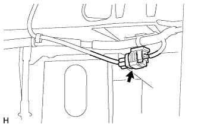
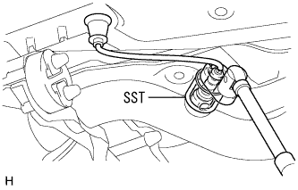

Exhaust pipe ASSY (1NZ-FE (4WD)) Remove |
| 1. Remove the front floor carpet ASSY FR |
reference)| 2. Oxygen sensor is removed |
|  |
Cut the indoor oxygen sensor connector and pull the harness outside the vehicle.
|  |
Use SST to remove the oxygen sensor.
| 3. Exploist tail pipe ASSY removes |
 |
Remove two bolts and two exhaust pipe support and remove the exhaust tail pipe ASSY.
Take off the gasket.
| 4. Exhaust pipe ASSY CTR removes |
Take off two nuts.
Remove the two exhaust pipe support and remove the exhaust pipe ASSY CTR.
Take off the gasket.
| 5. Remove the front tire |
| 6. Front suspension cross member SUB-ASSY disconnection |
 |
Remove the two bolts and disconnect the power steering gear ASSY W/Vane pump ASSY.
Remove the cottal pin and remove the castle nut.
 |
Attach the SST to the front suspension Roy arm No.1 RH and LH.
Use the SST to separate the front suspension Rewer arm No.1 RH and LH ball joints from the steering knuckle.

| *a | Put a wrench in this position | - | - |
 |
Remove the four bolts and remove the front suspension Menbarin Housing RH and LH.
 |
Remove two bolts and nuts and separate the engine mounting insulator RR.
 |
Support suspension cross members in high mission jacks.
Remove the four bolts in the figure in the figure, and secure the gap between the exhaust pipe ASSY FR with the high mission jack.
| 7. Exhaust pipe ASSY FR removed |
Remove the two bolts and two compression springs and remove the exhaust pipe ASSY FR.
Take off the gasket.